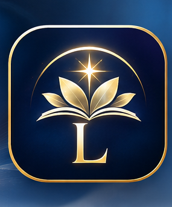

Aprendé a tu ritmo
Lecciones organizadas por módulos, disponibles desde cualquier dispositivo.

YUNA ACADEMYVer programas ↗✦ UN NUEVO UNIVERSO DE APRENDIZAJE
Un espacio para explorar saberes, desarrollar nuevas perspectivas y aprender a tu propio ritmo.
BIENVENIDOS A YUNA
Formación digital con contenidos organizados, pensamiento crítico y respeto por las distintas tradiciones del conocimiento.
NUESTROS CAMINOS DE APRENDIZAJE
Cinco programas con temarios publicados para consulta. La compra se habilitará después de validar la pasarela y la entrega de acceso.
NUESTRA PROPUESTA
Construimos una experiencia que reunirá clases, recursos, evaluaciones y certificados verificables.
Lecciones organizadas por módulos, disponibles desde cualquier dispositivo.
Distinguimos las tradiciones culturales de las afirmaciones respaldadas por evidencia.
Los exámenes se están preparando en el campus; la emisión de certificados todavía no está habilitada.